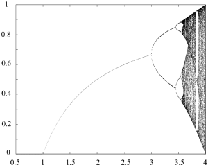
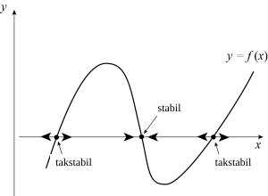

Gambar 5.1. Jumlah elang ekor-merah yang dicacah di Amerika Serikat, dari 1900 (tahun ke-1) hingga 2004 (tahun ke-105), berdasarkan data yang dikumpulkan oleh Audubon Society. [Deskripsi Gambar][/caption]Gambar 5.1 menunjukkan jumlah elang ekor-merah yang dicacah di Amerika Serikat dari 1900 (tahun ke-1) hingga 2004 (tahun ke-105). Kita dapat melihat bahwa populasinya bertambah selama sebagian besar abad lalu dan tampaknya mulai mendekati kejenuhan pada akhir 1990-an. Untuk memahami data ini, kita dapat mencoba memplot laju perubahan populasi, yang didefinisikan sebagai
$latex \displaystyle \frac{\Delta N}{\Delta t} = \frac{N(t + \Delta t) - N(t)}{\Delta t},$
dengan $latex t$ menyatakan waktu dalam tahun, $latex N(t)$ jumlah burung yang dicacah pada waktu $latex t$, dan dalam kasus ini $latex \Delta t = 1$ tahun. Grafik tersebut menunjukkan bahwa besaran $latex \Delta N / \Delta t$ berfluktuasi dan besar fluktuasinya meningkat seiring waktu. Karena jumlah elang ekor-merah juga meningkat sebagai fungsi waktu, sebagai gantinya kita dapat melihat laju perubahan yang dinormalisasi terhadap jumlah individu, yang kita lambangkan dengan $latex R(t)$. Dengan demikian, kita mendefinisikan laju perubahan per kapita populasi elang ekor-merah sebagai
Gambar 5.1. Jumlah elang ekor-merah yang dicacah di Amerika Serikat, dari 1900 (tahun ke-1) hingga 2004 (tahun ke-105), berdasarkan data yang dikumpulkan oleh Audubon Society. [Deskripsi Gambar][/caption]Gambar 5.1 menunjukkan jumlah elang ekor-merah yang dicacah di Amerika Serikat dari 1900 (tahun ke-1) hingga 2004 (tahun ke-105). Kita dapat melihat bahwa populasinya bertambah selama sebagian besar abad lalu dan tampaknya mulai mendekati kejenuhan pada akhir 1990-an. Untuk memahami data ini, kita dapat mencoba memplot laju perubahan populasi, yang didefinisikan sebagai
$latex \displaystyle \frac{\Delta N}{\Delta t} = \frac{N(t + \Delta t) - N(t)}{\Delta t},$
dengan $latex t$ menyatakan waktu dalam tahun, $latex N(t)$ jumlah burung yang dicacah pada waktu $latex t$, dan dalam kasus ini $latex \Delta t = 1$ tahun. Grafik tersebut menunjukkan bahwa besaran $latex \Delta N / \Delta t$ berfluktuasi dan besar fluktuasinya meningkat seiring waktu. Karena jumlah elang ekor-merah juga meningkat sebagai fungsi waktu, sebagai gantinya kita dapat melihat laju perubahan yang dinormalisasi terhadap jumlah individu, yang kita lambangkan dengan $latex R(t)$. Dengan demikian, kita mendefinisikan laju perubahan per kapita populasi elang ekor-merah sebagai
$latex R(t) = \displaystyle \frac{N(t + \Delta t) - N(t)}{N(t) \Delta t}.$
[caption id="attachment_42" align="alignleft" width="300"] Gambar 5.2. Plot besaran $latex R(t)$ untuk hasil pencacahan elang ekor-merah, berdasarkan data yang dikumpulkan oleh Audubon Society. [Deskripsi Gambar][/caption]Gambar 5.2 menunjukkan $latex R(t)$ sebagai fungsi $latex t$. Fluktuasi tentu saja masih ada, tetapi kini sangat besar hanya ketika $latex N(t)$ relatif kecil. Selain itu, data tampak berfluktuasi di sekitar suatu nilai rata-rata yang positif (meskipun cukup kecil). Pada tahun-tahun terakhir, kecenderungan ini tidak lagi berlaku, dan sejak 1995, $latex R(t)$ tampak berosilasi di sekitar nilai yang lebih dekat ke nol.
Oleh karena itu, masuk akal untuk mengharapkan $latex N(t+\Delta t)$ berperilaku seperti fungsi linear dari $latex N(t)$, dengan sejumlah fluktuasi, dan memperlihatkan kejenuhan pada tahun-tahun terakhir. Hal ini didukung oleh plot pada Gambar 5.3, yang menunjukkan $latex N(t + \Delta t) = N(t+ 1)$ sebagai fungsi $latex N(t)$. Kita melihat bahwa $latex N(t+ 1)$ sangat dekat dengan $latex 1.025\ N(t)$. Kemiringan ini diperoleh melalui pencocokan kuadrat terkecil antara data dan garis lurus yang melalui titik asal (ditampilkan dengan warna merah). Seperti terlihat pada Gambar 5.3, kesesuaiannya cukup baik. Nilai $latex 1.025$ dekat dengan, tetapi sedikit lebih kecil dan berada di luar, interval kepercayaan 95% [1.026, 1.029] untuk laju pertumbuhan tahunan elang ekor-merah di Amerika Utara, yang ditemukan dalam artikel tahun 2016 oleh C.S. Soykan et al.[footnote]Candan U. Soykan, John Sauer, Justin G. Schuetz, Geoffrey S. LeBaron, Kathy Dale, Gary M. Langham, Kecenderungan populasi burung musim dingin Amerika Utara berdasarkan model hierarkis, Ecosphere 7, e01351 (2016); Tabel S3, baris 206.[/footnote], yang menggunakan analisis statistik untuk memperkirakan kecenderungan populasi dari data pencacahan burung.
[caption id="attachment_43" align="alignleft" width="300"]
Gambar 5.2. Plot besaran $latex R(t)$ untuk hasil pencacahan elang ekor-merah, berdasarkan data yang dikumpulkan oleh Audubon Society. [Deskripsi Gambar][/caption]Gambar 5.2 menunjukkan $latex R(t)$ sebagai fungsi $latex t$. Fluktuasi tentu saja masih ada, tetapi kini sangat besar hanya ketika $latex N(t)$ relatif kecil. Selain itu, data tampak berfluktuasi di sekitar suatu nilai rata-rata yang positif (meskipun cukup kecil). Pada tahun-tahun terakhir, kecenderungan ini tidak lagi berlaku, dan sejak 1995, $latex R(t)$ tampak berosilasi di sekitar nilai yang lebih dekat ke nol.
Oleh karena itu, masuk akal untuk mengharapkan $latex N(t+\Delta t)$ berperilaku seperti fungsi linear dari $latex N(t)$, dengan sejumlah fluktuasi, dan memperlihatkan kejenuhan pada tahun-tahun terakhir. Hal ini didukung oleh plot pada Gambar 5.3, yang menunjukkan $latex N(t + \Delta t) = N(t+ 1)$ sebagai fungsi $latex N(t)$. Kita melihat bahwa $latex N(t+ 1)$ sangat dekat dengan $latex 1.025\ N(t)$. Kemiringan ini diperoleh melalui pencocokan kuadrat terkecil antara data dan garis lurus yang melalui titik asal (ditampilkan dengan warna merah). Seperti terlihat pada Gambar 5.3, kesesuaiannya cukup baik. Nilai $latex 1.025$ dekat dengan, tetapi sedikit lebih kecil dan berada di luar, interval kepercayaan 95% [1.026, 1.029] untuk laju pertumbuhan tahunan elang ekor-merah di Amerika Utara, yang ditemukan dalam artikel tahun 2016 oleh C.S. Soykan et al.[footnote]Candan U. Soykan, John Sauer, Justin G. Schuetz, Geoffrey S. LeBaron, Kathy Dale, Gary M. Langham, Kecenderungan populasi burung musim dingin Amerika Utara berdasarkan model hierarkis, Ecosphere 7, e01351 (2016); Tabel S3, baris 206.[/footnote], yang menggunakan analisis statistik untuk memperkirakan kecenderungan populasi dari data pencacahan burung.
[caption id="attachment_43" align="alignleft" width="300"] Gambar 5.3. Peta balik pertama, yang menunjukkan N(t + Δt) sebagai fungsi N(t), untuk hasil pencacahan elang ekor-merah oleh Audubon Society. Garis lurus memiliki kemiringan 1.025. [Deskripsi Gambar][/caption]Namun, perhatikan bahwa kita tidak mengharapkan—dan memang tidak terdapat—kesesuaian yang baik pada nilai-nilai kecil $latex N$. Akan tetapi, skala Gambar 5.3 menyebabkan sebaran titik-titik di dekat titik asal tidak tampak untuk $latex N(t) \lt 5,000$, yang berkaitan dengan waktu $latex t \le 50$ (lihat Gambar 5.1). Ringkasnya, meskipun datanya bising dan tidak presisi, suatu model sederhana untuk populasi elang ekor-merah di Amerika Serikat, katakanlah dari 1950 hingga 1995, tampaknya berbentuk
Gambar 5.3. Peta balik pertama, yang menunjukkan N(t + Δt) sebagai fungsi N(t), untuk hasil pencacahan elang ekor-merah oleh Audubon Society. Garis lurus memiliki kemiringan 1.025. [Deskripsi Gambar][/caption]Namun, perhatikan bahwa kita tidak mengharapkan—dan memang tidak terdapat—kesesuaian yang baik pada nilai-nilai kecil $latex N$. Akan tetapi, skala Gambar 5.3 menyebabkan sebaran titik-titik di dekat titik asal tidak tampak untuk $latex N(t) \lt 5,000$, yang berkaitan dengan waktu $latex t \le 50$ (lihat Gambar 5.1). Ringkasnya, meskipun datanya bising dan tidak presisi, suatu model sederhana untuk populasi elang ekor-merah di Amerika Serikat, katakanlah dari 1950 hingga 1995, tampaknya berbentuk
$latex N (t + 1) = \kappa \ N(t),$
dengan $latex \kappa$ suatu konstanta yang dekat dengan $latex 1.025$. Kita dapat memahami hubungan linear tersebut sebagai berikut. Jika migrasi masuk dan keluar Amerika Serikat kita abaikan—ingat bahwa elang ekor-merah merupakan burung migran jarak pendek—kita dapat menulis$latex N(t + \Delta t) = N(t) + \text{jumlah kelahiran} - \text{jumlah kematian}.$
Sebagai pendekatan pertama, masuk akal untuk mengasumsikan bahwa jumlah kematian maupun jumlah kelahiran dapat ditulis sebagai hasil kali $latex N$ dengan suatu fungsi dari $latex N$ dan $latex t$. Pendekatan semacam ini berlaku untuk sebagian besar model dinamika populasi dalam sistem tertutup. Dengan demikian, kita mendefinisikan laju kelahiran per kapita $latex b,$ dan laju kematian per kapita $latex d$ sebagai$latex b = \displaystyle \frac{\text{jumlah kelahiran per }\Delta t}{N(t) \Delta t}, \qquad d = \displaystyle \frac{\text{jumlah kematian per }\Delta t}{N(t) \Delta t}.$
Maka,$latex N(t + \Delta t) = N(t) \left(1 + b \Delta t - d \Delta t\right) = \kappa\ N(t),$
$latex R(t)= \displaystyle \frac{N(t + \Delta t) - N(t)}{N(t) \Delta t} = b - d.$
Pada fase perkembangan, yaitu ketika jumlah individu jauh lebih rendah daripada populasi maksimum yang dapat ditopang lingkungan, kita dapat mengasumsikan bahwa $latex b$ dan $latex d$ konstan, sehingga diperoleh$latex N(t+1) = \kappa\ N(t), \qquad \kappa = \text{konstan}.\qquad (5.1)$
Untuk elang ekor-merah, pembahasan di atas menyiratkan bahwa $latex \kappa \simeq 1.025$, yaitu $latex b-d=0.025\ \text{tahun}^{-1}$. Tentu saja, fluktuasi selalu ada dalam praktik, tetapi model sederhana ini, yang dikenal sebagai persamaan Malthus dalam waktu diskret, sudah cukup untuk menjelaskan pertumbuhan eksponensial (atau Malthusian) populasi. Memang, Persamaan (5.1) menyiratkan bahwa$latex N(t_0 + m \Delta t) = \kappa^m N(t_0).$
Jika $latex \kappa > 1$, yaitu jika kelahiran melebihi kematian, $latex N(t)$ bertumbuh secara eksponensial. Sebaliknya, jika $latex 0 \lt \kappa \lt 1$, $latex N(t)$ menyusut secara eksponensial dan spesies tersebut terdorong menuju kepunahan. Kita telah mengasumsikan bahwa $latex \kappa \ge 0$. Jika tidak, $latex N(t)$ akan bergantian antara nilai positif dan negatif, dan model dinamika populasi kita jelas cacat.
Ketika jumlah individu mendekati daya dukung lingkungan, efek nonlinear tidak lagi dapat diabaikan, dan laju pertumbuhan populasi berubah bersama jumlah individu $latex N(t)$. Misalnya, pertumbuhan logistik berkaitan dengan$latex \displaystyle N(t + \Delta t) = \Big(1 + \kappa \big(N_\infty - N(t)\big)\Big) \cdot N(t) \qquad \kappa = \text{konstan},$
yang memiliki faktor pengali pertumbuhan yang bergantung pada $latex N$ untuk setiap langkah $latex \Delta t$, yaitu $latex \Big(1 + \kappa \big(N_\infty - N(t)\big)\Big)$. Laju pertumbuhan fraksional per langkahnya adalah $latex \kappa\big(N_\infty-N(t)\big)$. Parameter $latex N_\infty$ menyatakan daya dukung lingkungan. Simbol $latex \kappa$ di sini berbeda dari pengali tak berdimensi pada Persamaan (5.1): parameter ini berdimensi invers populasi, $latex [\kappa]=[\text{populasi}]^{-1}$. Agar model populasi tetap bermakna, parameter dan rentang keadaan harus dipilih sehingga $latex 1+\kappa\bigl(N_\infty-N(t)\bigr)\geq 0$.$latex N_{k+1} = f(N_k), \qquad k \in \mathbb{N}, \qquad (5.2)$
dengan $latex N_k= N(k \Delta t)$. Persamaan (5.2) disebut persamaan beda orde pertama. Persamaan ini linear jika $latex f(x)$ linear terhadap $latex x$, dan memiliki koefisien konstan jika $latex f$ tidak bergantung pada $latex k$. Dalam konteks dinamika populasi, model seperti Persamaan (5.2) kadang-kadang disebut model berinterval. Persamaan (5.1), yang dapat ditulis sebagai$latex N_{k+1} = \kappa\ N_k,$
oleh karena itu merupakan persamaan beda linear orde pertama dengan koefisien konstan. Seperti disebutkan di atas, solusinya adalah$latex N_k = \kappa^k\ N_0,$
dengan $latex N_0$ sebagai kondisi awal. [caption id="attachment_44" align="alignleft" width="287"] Gambar 5.4. Representasi grafis iterasi berurutan peta Nk+1 = f(Nk). Empat iterasi pertama N1 hingga N4 dari fungsi f, yang dimulai pada N = N0, juga ditunjukkan. Simbol Ns dan Nu masing-masing merujuk pada titik tetap stabil dan tak stabil. [Deskripsi Gambar][/caption]
Secara lebih umum, kita dapat menulis
Gambar 5.4. Representasi grafis iterasi berurutan peta Nk+1 = f(Nk). Empat iterasi pertama N1 hingga N4 dari fungsi f, yang dimulai pada N = N0, juga ditunjukkan. Simbol Ns dan Nu masing-masing merujuk pada titik tetap stabil dan tak stabil. [Deskripsi Gambar][/caption]
Secara lebih umum, kita dapat menulis
$latex N_{k} = f^k(N_0),$
dengan $latex f^k$ merupakan iterasi ke-$latex k$ dari $latex f$. Bahkan jika grafik $latex f$ rumit, dinamika $latex N_k$ dapat divisualisasikan dengan mengiterasikan $latex f$ secara grafis, seperti ditunjukkan pada Gambar 5.4. Dimulai dari nilai awal $latex N_0$ untuk $latex N$, pertama-tama kita mencari $latex f(N_0)$ sebagai koordinat $latex y$ dari perpotongan grafik $latex f$ dengan garis $latex x = N_0$. Kemudian, kita menandai nilai $latex N_1 = f(N_0)$ pada sumbu $latex x$ dengan menggambar garis vertikal melalui perpotongan garis $latex x=y$ dan garis $latex y = f(N_0)$. Terakhir, proses ini kita ulang untuk memperoleh iterasi-iterasi $latex f$ berikutnya. Dalam contoh pada Gambar 5.4, iterasi yang dimulai pada $latex N = N_0$ konvergen menuju suatu titik tetap $latex N = N_s$.$latex f(N) = f(N_c + u) = f(N_c) + u f^\prime(N_c) + O(u^2),$
dan$latex f(N) - N_c = f(N)-f(N_c) = u f^\prime(N_c) + O(u^2) \simeq u f^\prime(N_c),$
dengan pendekatan terakhir sesuai jika $latex u$ cukup kecil. Peta linear $latex u_{k+1} = f^\prime(N_c) u_k$ memiliki iterasi yang konvergen menuju nol jika $latex |f^\prime(N_c)| \lt 1$, dan divergen jika $latex |f^\prime(N_c)| \gt 1$. Karena itu, titik tetap $latex N = N_c$ disebut stabil secara linear jika $latex |f^\prime(N_c)| \lt 1$, dan tak stabil jika $latex |f^\prime(N_c)| > 1$. Jika $latex |f^\prime(N_c)| = 1,$ linearisasi tidak menentukan kestabilan titik $latex N = N_c$; titik tersebut nonhiperbolik dan suku nonlinear harus diperiksa.
Gambar 5.5. Diagram bifurkasi peta logistik. [Deskripsi Gambar][/caption]Gambar 5.5 menunjukkan diagram bifurkasi peta logistik. Seperti disebutkan di atas, untuk nilai $latex a$ tertentu, iterasi $latex f$ secara berurutan konvergen menuju suatu atraktor, misalnya titik tetap, siklus periode dua, atau struktur yang jauh lebih rumit. Diagram bifurkasi $latex f$ merepresentasikan atraktor ini sebagai fungsi $latex a.$ Diagram tersebut diperoleh secara numerik dengan memplot himpunan titik$latex \left\{ x_k,\ k_{min} \lt k \lt k_{max} \right\},$
untuk nilai-nilai $latex a$ yang berbeda. Di sini, kondisi awalnya adalah suatu titik $latex x_0 \in (0,1)$, misalnya $latex x_0 = 1/2$; $latex k_{min}$ cukup besar agar dinamika sudah cukup dekat dengan atraktornya setelah $latex k_{min}$ iterasi; dan $latex k_{max}$ bergantung pada daya komputasi yang tersedia. Diagram bifurkasi pada Gambar 5.5 dihitung dengan $latex k_{min}=1500$ dan $latex k_{max}=1700$. [caption id="attachment_46" align="alignleft" width="300"] Gambar 5.6. Diagram bifurkasi peta logistik, untuk 3 ≤ a ≤ 4. [Deskripsi Gambar][/caption]Pembesaran untuk $latex 3 \le a \le 4$ ditunjukkan pada Gambar 5.6. Siklus berperiode 2, 4, dan 8 tampak jelas. Jendela periode 3 dan 6 untuk nilai $latex a$ yang lebih besar juga mudah dikenali.
Siklus periode-$latex n$ dapat dianalisis dengan melihat titik-titik tetap $latex f^n$. Tentu saja, ketika $latex n$ meningkat, pencarian titik-titik tetap tersebut dengan cepat menjadi sulit. Namun, dapat ditunjukkan bahwa semua bifurkasi penggandaan periode terjadi dengan cara serupa yang bersifat universal (lihat artikel P. Coullet & C. Tresser, 1978[footnote]P. Coullet dan C. Tresser, Itérations d'endomorphismes et groupe de renormalisation J. Phys. Colloques 39, C5: 25-28 (1978)[/footnote] dan M. Feigenbaum, 1980[footnote]Mitchell J. Feigenbaum, Universal Behavior in Nonlinear Systems, Los Alamos Science Summer 1980, 4-27 (1980)[/footnote]). Untuk uraian sederhana tentang berbagai jenis ketakstabilan yang terjadi dalam peta logistik dan peta teriterasi lainnya, pembaca dirujuk ke artikel Robert May tahun 1976 berjudul Simple mathematical models with very complicated dynamics serta latihan di akhir bab ini.
Gambar 5.6. Diagram bifurkasi peta logistik, untuk 3 ≤ a ≤ 4. [Deskripsi Gambar][/caption]Pembesaran untuk $latex 3 \le a \le 4$ ditunjukkan pada Gambar 5.6. Siklus berperiode 2, 4, dan 8 tampak jelas. Jendela periode 3 dan 6 untuk nilai $latex a$ yang lebih besar juga mudah dikenali.
Siklus periode-$latex n$ dapat dianalisis dengan melihat titik-titik tetap $latex f^n$. Tentu saja, ketika $latex n$ meningkat, pencarian titik-titik tetap tersebut dengan cepat menjadi sulit. Namun, dapat ditunjukkan bahwa semua bifurkasi penggandaan periode terjadi dengan cara serupa yang bersifat universal (lihat artikel P. Coullet & C. Tresser, 1978[footnote]P. Coullet dan C. Tresser, Itérations d'endomorphismes et groupe de renormalisation J. Phys. Colloques 39, C5: 25-28 (1978)[/footnote] dan M. Feigenbaum, 1980[footnote]Mitchell J. Feigenbaum, Universal Behavior in Nonlinear Systems, Los Alamos Science Summer 1980, 4-27 (1980)[/footnote]). Untuk uraian sederhana tentang berbagai jenis ketakstabilan yang terjadi dalam peta logistik dan peta teriterasi lainnya, pembaca dirujuk ke artikel Robert May tahun 1976 berjudul Simple mathematical models with very complicated dynamics serta latihan di akhir bab ini.
Model diskret yang dibahas pada bagian pertama memenuhi
$latex \displaystyle \frac{N(t + \Delta t) - N(t)}{\Delta t} = N(t) R(t).$
Ketika $latex \Delta t \rightarrow 0$, hasil bagi beda pada ruas kiri dapat didekati dengan $latex dN / dt$, sehingga kita memperoleh pendekatan kontinu berikut
$latex \displaystyle \frac{d N}{d t} = R(t) N(t). \qquad (5.3)$
Pendekatan semacam ini bermakna hanya jika $latex N$ dapat dipandang sebagai fungsi yang dapat didiferensialkan terhadap $latex t$. Secara khusus, $latex N$ harus kontinu. Karena itu, Persamaan (5.3) hanya menjadi model populasi yang masuk akal jika $latex N$ besar. Dalam kasus model fenomenologis, jika efek stokastik dapat diabaikan dan $latex N$ mendekati jumlah individu yang sebenarnya, jumlah tersebut seharusnya dekat dengan bilangan bulat $latex \text{round}(N(t))$ yang paling dekat dengan $latex N(t).$ Kemungkinan lain ialah mendefinisikan $latex N(t)$ sebagai kepadatan, misalnya jumlah rata-rata individu per satuan luas permukaan. Atau, $latex N(t)$ dapat dipandang sebagai nilai harapan dari populasi yang besar. Dalam konteks tersebut, berguna untuk memandang $latex R(t) \delta t + O(\delta t^2)$ sebagai perubahan bersih per kapita yang diharapkan; besaran ini bukan peluang jika laju bersihnya negatif, sehingga perubahan harapan pada $latex N$ selama selang waktu kecil antara $latex t$ dan $latex t + \delta t$ adalah $latex R(t) N(t) \delta t + O(\delta t^2)$. Dalam bagian selanjutnya dari catatan ini, kita terutama menggunakan model kontinu sehingga secara implisit mengasumsikan bahwa besaran-besaran yang relevan terdeskripsi secara memadai oleh variabel kontinu.
Jika $latex R(t) = b - d \equiv r$ dengan $latex b$ dan $latex d$ konstan, Persamaan (5.3) berbentuk
$latex \displaystyle \frac{d N}{d t} = r\ N(t) \qquad (5.4)$
dan solusinya adalah $latex N(t) = \exp(r t) N_0,$ dengan $latex N_0$ populasi pada $latex t = 0$. Jika $latex r > 0,$ populasi bertumbuh secara eksponensial; jika $latex r \lt 0,$ $latex N(t)$ menyusut menuju nol dan spesies tersebut punah. Dengan demikian, terdapat analogi langsung antara kedua model linear yang diberikan oleh Persamaan (5.1) dan (5.4), yang ditelaah lebih lanjut dalam latihan. Persamaan (5.4) dikenal sebagai persamaan Malthus dalam waktu kontinu.
$latex \displaystyle \frac{d N}{d t} = a N (N_c - N),$
dengan $latex N_c$ dan $latex a$ sebagai parameter. Persamaan ini, yang dikenal sebagai persamaan Verhulst, dapat disederhanakan menjadi$latex \displaystyle \frac{d M}{d t} =\lambda M (1 - M)\quad (5.5)$
dengan melakukan perubahan variabel $latex \displaystyle M = \frac{N}{N_c}$ dan $latex \lambda = a N_c$. Perhatikan bahwa $latex M$ tak berdimensi dan $latex [\lambda] = 1/T.$ Kita sebenarnya dapat mengubah skala variabel waktu dan memperoleh model tanpa parameter, tetapi hal itu belum akan kita lakukan sekarang. Solusi Persamaan (5.5) dengan kondisi awal $latex M(0) = M_0$ dan $latex M_0 \gt 0$ adalah $latex M(t) = \displaystyle \left[1 + \frac{1-M_0}{M_0} \exp(- \lambda t)\right]^{-1},$ untuk semua nilai parameter $latex \lambda$ pada selang keberadaan solusi. Ketika $latex t \rightarrow \infty$, $latex M \rightarrow 1$ jika $latex \lambda > 0$ untuk semua nilai positif $latex M_0$. Kasus $latex M_0=0$ merupakan kesetimbangan tersendiri dan solusinya tetap nol. Dalam variabel asal, kita memiliki $latex N \rightarrow N_c$. Besaran $latex N_c$ disebut daya dukung lingkungan. Besaran ini berkaitan dengan keadaan kesetimbangan tempat jumlah kematian mengimbangi jumlah kelahiran sehingga populasi dapat dipertahankan di tengah sumber daya yang terbatas. Jika $latex \lambda \lt 0$, maka $latex M \rightarrow 0$ jika $latex M_0 \lt 1$, dan $latex M \rightarrow \infty$ ketika $latex t \rightarrow t^*$, dengan $latex t^* = \displaystyle \frac{1}{- \lambda} \ln\left(\frac{M_0}{M_0-1}\right),$ jika $latex M_0 > 1$. Dalam kasus ini, solusi tersebut divergen dalam waktu berhingga. Dinamika $latex M$ bersifat monoton untuk semua nilai $latex \lambda$, sehingga sama sekali berbeda dari dinamika peta logistik diskret, yang dapat memperlihatkan kekacauan.$latex \displaystyle \frac{d N}{d t} = f(N), \qquad (5.6)$
dengan $latex f$ sebagai fungsi nonlinear dari $latex N$. Dalam konteks dinamika populasi, $latex f(N)$ disebut laju pertumbuhan bersih populasi. Besaran ini sering ditulis sebagai $latex f(N) = N R(N)$, dengan $latex R(N)$ sebagai laju pertumbuhan bersih per kapita populasi. Karena ruas kanan Persamaan (5.6) tidak bergantung pada $latex t$, persamaan diferensial ini disebut otonom. [caption id="attachment_47" align="alignleft" width="300"]
Gambar 5.7. Titik-titik tetap Persamaan (5.6) adalah nilai N tempat grafik f(N) memotong sumbu x. Kestabilan titik tetap Nc dapat disimpulkan dari perilaku f(N) di dekat N = Nc. [Deskripsi Gambar][/caption] Titik tetap $latex N_c$ dari (5.6) diberikan oleh $latex f(N_c)=0$, dan dapat diperoleh secara grafis dengan melihat tempat grafik $latex f$ memotong sumbu horizontal. Kestabilan nonlinear titik-titik tetap ini juga dapat dinilai secara grafis. Periksalah tanda $latex f(N)$ pada kedua sisi $latex N = N_c$; nol bermultiplikitas genap tidak harus disertai perubahan tanda. Kita mengetahui bahwa jika $latex f(N) > 0$ untuk $latex N \lt N_c$, maka $latex N$ akan bertumbuh menuju $latex N_c$, sedangkan jika $latex f(N) > 0$ untuk $latex N > N_c$, maka $latex N$ akan menjauh dari $latex N_c$. Karena itu, kestabilan setiap titik tetap $latex N_c$ dari $latex f$ dapat disimpulkan dengan menambahkan panah pada sumbu horizontal: panah mengarah ke kiri ketika $latex f$ negatif dan ke kanan ketika $latex f$ positif. Titik tetap stabil $latex N_c$ memiliki panah yang mengarah kepadanya dari kedua sisi, sedangkan titik tetap tak stabil dikaitkan dengan panah yang menjauh darinya. Hal ini diilustrasikan pada Gambar 5.7.$latex N_1(t + \Delta t) = N_1(t) + b_2 N_2(t) \Delta t - d_1 N_1(t) \Delta t - g_1 N_1(t) \Delta t$
$latex N_2(t + \Delta t) = N_2(t) + g_1 N_1(t) \Delta t - d_2 N_2(t) \Delta t - g_2 N_2(t) \Delta t$
$latex N_3(t + \Delta t) = N_3(t) + g_2 N_2(t) \Delta t - d_3 N_3(t) \Delta t,$
di mana $latex d_i$ adalah laju kematian per kapita kelompok $latex i$, $latex g_i$ adalah laju perpindahan individu yang bertahan hidup dari kelompok $latex i$ (atau, $latex g_i \Delta t$ menyatakan peluang bahwa seorang individu dalam kelompok $latex i$ akan berpindah ke kelompok $latex i+1$ selama $latex \Delta t$), dan $latex b_2$ adalah laju kelahiran per kapita pada kelompok 2. Selang waktu $latex \Delta t$ dapat berupa satu tahun atau lima tahun untuk populasi manusia. Selang tersebut harus lebih pendek daripada skala waktu khas sistem yang dimodelkan, misalnya waktu yang diperlukan seorang anak untuk menjadi dewasa atau waktu yang diperlukan seorang dewasa muda untuk berpindah ke kelompok 3. Sistem di atas bersifat linear sehingga dapat ditulis kembali dengan mudah sebagai persamaan beda bagi vektor $latex \vec C = (N_1,N_2,N_3)^T$, yaitu$latex \left(\begin{array}{c}N_1 \\ N_2 \\ N_3\end{array}\right)(t + \Delta t) = A \left(\begin{array}{c}N_1 \\ N_2 \\ N_3\end{array}\right)(t), \qquad (5.7)$
dengan $latex A = \displaystyle \left(\begin{array}{ccc} 1 - (d_1 + g_1) \Delta t & b_2 \Delta t & 0 \\ g_1 \Delta t & 1 - (d_2 + g_2) \Delta t & 0 \\ 0 & g_2 \Delta t & 1 - d_3 \Delta t\end{array}\right).$ Matriks $latex A$ memiliki entri konstan dan taknegatif jika laju-lajunya taknegatif serta $latex (d_1+g_1)\Delta t\leq 1$, $latex (d_2+g_2)\Delta t\leq 1$, dan $latex d_3\Delta t\leq 1$. Karena matriks ini memuat retensi pada diagonal dan kelas tahap, bentuknya lebih tepat disebut matriks proyeksi kelas tahap bertipe Lefkovitch daripada matriks Leslie klasik. Kita dapat mencari solusi Persamaan (5.7) dalam bentuk $latex \vec C (t_0 + m \Delta t) = r^m \vec C(t_0),$ dengan $latex t_0$ sebagai suatu waktu awal. Substitusi bentuk ini ke dalam Persamaan (5.7) menghasilkan $latex \displaystyle A \vec C(t_0) = r\, \vec C(t_0),$ yakni $latex \vec C(t_0)$ merupakan vektor eigen $latex A$ dengan nilai eigen $latex r$. Jika matriks $latex A$ dapat didiagonalkan, solusi umum Persamaan (5.7) dapat ditulis sebagai$latex \vec C(m\, \Delta t) = a_1 r_1^m \vec C_1 + a_2 r_2^m \vec C_2 + a_3 r_3^m \vec C_3,$
di mana $latex \vec C_i$ adalah tiga vektor eigen $latex A$ yang bebas linear, dengan nilai eigen terkait $latex r_i$, sedangkan $latex a_i$ adalah koefisien yang ditentukan oleh kondisi awal $latex \vec C(0) = \vec C_0$, dengan $latex \vec C_0$ diketahui. Perhatikan bahwa karena $latex A$ memiliki entri riil, semua nilai eigennya riil atau terdiri atas satu nilai eigen riil dan sepasang nilai eigen kompleks konjugat. Dalam kasus terakhir, dua dari $latex \vec C_i$, misalnya $latex \vec C_2$ dan $latex \vec C_3$, juga saling konjugat kompleks, dan kondisi awal riil menghasilkan $latex a_3 = a_2^*$, dengan tanda bintang menyatakan konjugasi kompleks. Dinamika Persamaan (5.7) bergantung pada letak nilai-nilai eigen $latex A$ di bidang kompleks relatif terhadap lingkaran satuan. Memang, jika $latex |r_i|>1$, pertumbuhan eksponensial akan teramati pada arah $latex \vec C_i$, dengan pertumbuhan tercepat—dan karena itu dominan—sepanjang arah eigen yang terkait dengan nilai eigen utama $latex A$. Sebaliknya, jika semua nilai eigen $latex A$ bermodulus kurang dari 1, maka $latex \vec C(m\, \Delta t)$ akan menuju nol. Perilaku yang lebih kompleks, termasuk kekacauan, dapat teramati jika efek nonlinear diperhitungkan.$latex \displaystyle \left\{\begin{array}{l} L(t + 1) = b A(t),\\ P(t + 1) = L(t) - d_l L(t),\\A(t + 1) = A(t) - d_a A(t) + P(t), \end{array}\right.$
di mana konstanta positif $latex d_l$ dan $latex d_a$ adalah peluang kematian larva dan dewasa selama selang $latex \Delta t\ (= 1)$, parameter $latex b > 0$ adalah banyaknya rata-rata telur per individu dewasa yang menetas selama $latex \Delta t$, dan kematian pada tahap pupa diabaikan. Kanibalisme telur oleh kumbang dewasa dan larva masing-masing dimodelkan melalui faktor perkalian berbentuk $latex \exp(-c_{ea} A(t))$ dan $latex \exp(-c_{el} L(t))$, sedangkan kanibalisme pupa oleh kumbang dewasa dinyatakan dengan $latex \exp(-c_{pa} A(t))$ (lihat artikel Costantino et al. dan Cushing et al. yang disebutkan di atas). Di sini, konstanta $latex c_{ea}$, $latex c_{el}$, dan $latex c_{pa}$ semuanya positif. Suku-suku eksponensial menyatakan proporsi telur atau pupa yang bertahan hidup hingga tahap perkembangan berikutnya dan dapat dipahami sebagai berikut. Kumbang pada tahap merayap (larva dan dewasa) bergerak di dalam tepung dan dapat berjumpa dengan individu pada tahap tak bergerak, seperti telur dan pupa. Ketika hal itu terjadi, larva atau kumbang dewasa yang bergerak akan menggigit telur atau pupa tersebut sehingga membunuhnya. Kita mengasumsikan bahwa larva hanya membunuh telur karena pupa lebih besar daripada larva. Misalkan peluang seekor kumbang dewasa menjumpai satu telur selama selang waktu $latex \Delta t$ diberikan oleh $latex p\, \Delta t$, dengan $latex p$ konstan. Maka, peluang telur tersebut belum dimakan oleh kumbang dewasa ini pada akhir $latex \Delta t$ adalah $latex 1 - p \Delta t$, dan peluang telur ini (atau telur lainnya) menjadi larva adalah $latex \left(1 - p \Delta t\right)^{A(t)}$ karena terdapat $latex A(t)$ kumbang dewasa. Jadi, jika telur hanya dimakan oleh kumbang dewasa, kita akan menuliskan$latex \begin{align*}L(t + \Delta t) & =b A(t) (1 - p \Delta t)^{A(t)}\\ & =b A(t) \exp\left(A(t) \ln(1 - p \Delta t)\right)=b A(t) \exp\left(- c_{ea} A(t)\right),\end{align*}$
di mana $latex c_{ea} = - \ln(1 - p \Delta t)$. Dengan penalaran serupa, fakta bahwa telur juga dimakan oleh larva diperhitungkan dengan mengalikan ruas kanan persamaan di atas dengan $latex \exp(- c_{el} L(t))$. Dengan demikian, model LPA deterministik (LPA menyingkat istilah Inggris Larva, Pupa, Adult, yakni larva, pupa, dan dewasa), yang mencakup kanibalisme pupa dan telur oleh kumbang dewasa serta kanibalisme telur oleh larva, dituliskan sebagai$latex \displaystyle \left\{\begin{array}{l} L(t + 1)=b A(t) \exp(-c_{ea} A(t) - c_{el} L(t)),\\ P(t + 1) = L(t) - d_l L(t),\\A(t + 1) = A(t) - d_a A(t) + P(t) \exp(-c_{pa} A(t)). \end{array}\right.$
Ulasan mengenai sifat-sifat dinamik model LPA dapat ditemukan dalam artikel Jim Cushing et al. tahun 1998 yang berjudul Nonlinear population dynamics: models, experiments and data. Secara khusus, dapat ditunjukkan bahwa lintasan model LPA yang bermula di oktan taknegatif akan tetap taknegatif. Selain itu, ketika suku stokastik ditambahkan ke persamaan-persamaan di atas, prediksi model yang dihasilkan—termasuk perilaku yang konsisten dengan dinamika kacau—menunjukkan kesesuaian yang sangat baik dengan eksperimen.$latex x_{n+1} = a x_n (1 - x_n) \equiv f(x_n), 0 \lt a \lt 4.$
$latex \int_{a_1}^{a_2} M(a,t) d a.$
Tunjukkan bahwa dinamika $latex M$ dideskripsikan oleh persamaan diferensial parsial berikut, yang dikenal sebagai persamaan diferensial parsial McKendrick atau von Foerster,$latex \displaystyle \frac{\partial M}{\partial t} + \frac{\partial M}{\partial a} = - d(a) M,$
dengan fungsi mortalitas $latex d(a)$ menyatakan laju kematian per kapita individu berumur $latex a$.$latex \displaystyle \left\{\begin{array}{l} J(t + \Delta t)=b A(t) \exp\left(- c A(t)\right),\\ A(t + \Delta t)=(1 - d_J) J(t) + (1 - d_A) A(t), \end{array}\right.$
dengan $latex b\gt 0$, $latex c\gt 0$, dan $latex 0\leq d_J,d_A\leq 1$ sebagai parameter.